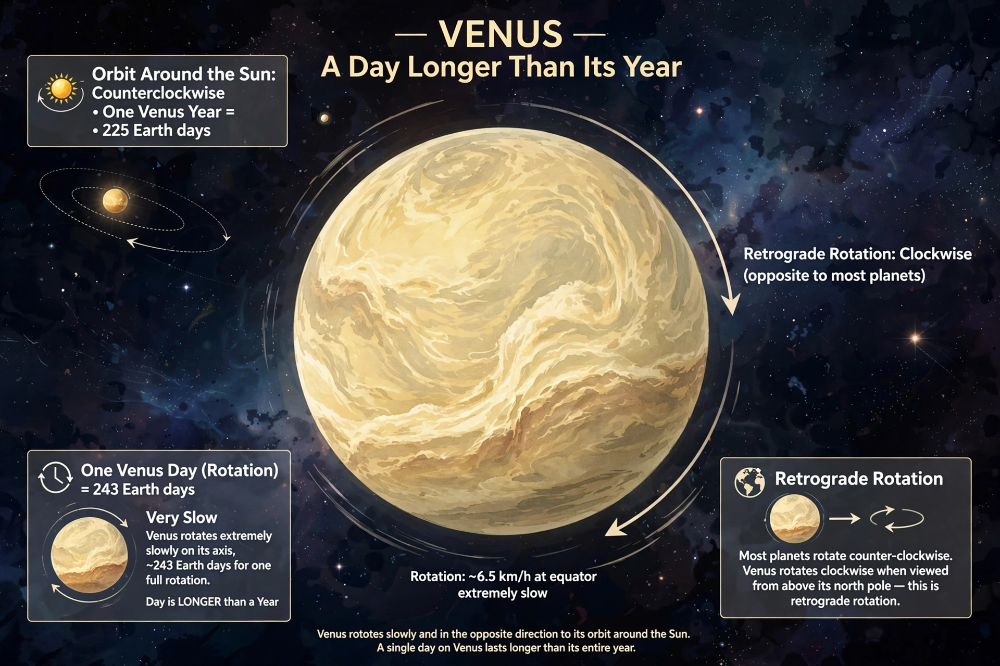

Sabías que un día dura más que un año en Venus?

Venus rompe todas las reglas. Su año, o sea el tiempo que tarda en dar la vuelta al Sol, dura 225 días terrestres. Pero su día, el tiempo que tarda en girar sobre sí mismo, dura 243 días terrestres. Es decir, un día es más largo que todo su año.Y hay más: Venus gira al revés. Si pudieras estar ahí, verías el Sol salir por el oeste y ponerse por el este. Gira tan lento que su atmósfera le da 4 vueltas mientras él apenas da una. Todo esto probablemente pasó porque hace miles de millones de años algo gigante chocó con él y lo volteó.Es el planeta más caliente del sistema, 475°C, más caliente que Mercurio aunque está más lejos del Sol, por su efecto invernadero brutal.
pagina2